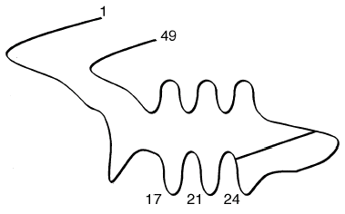
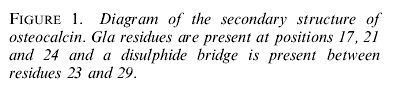

Einführung
Eine häufige Fehlinterpretation des Junge-Erde-Kreationismus (YEC) bezüglich überlebenden organischen Materials in Dinosaurierknochen besteht darin, dass dies die Jugend der Erde „beweise" und dass radiometrische Datierungsmethoden verworfen werden sollten. Ihr Argument reduziert sich auf nichts anderes als die Behauptung, dass organische Moleküle nicht lange überdauern können. Die am häufigsten zitierten Materialien sind Fragmente des Knochenproteins Osteocalcin, Muyzer et al. (1992), und Hämoglobin, Schweitzer et al. (1997). Ich habe mich bereits mit der falschen Behauptung von Carl Weiland befasst, dass „rote Blutkörperchen" und „Hämoglobin" in „frischen" Dinosaurierknochen intakt entdeckt worden seien (Wieland 1997), in „Dino-Blut und der Junge-Erde-Kreationismus". Ich wende mich nun dem Argument zu, dass die Erhaltung alter Osteocalcin-Fragmente als Beleg für eine junge Erde ausgelegt werden kann.
Mein Interesse an Osteocalcin wurde durch einen jungen-Erde-Kreationisten geweckt, der behauptete: „Tatsächlich passt das Schöpfungserzählung aus Genesis den Beweisen perfekt. Viel besser als die Evolutionstheorie, sicher. Zum einen passen alle Beweise für eine junge Erde zur Schöpfungserzählung und widerlegen die Evolution im Wesentlichen – zum Beispiel, wie ist es möglich, dass einige fossilisierte Dinosaurierreste Blut (oder etwas Ähnliches) enthalten, das nicht für Millionen von Jahren in einem fossilisierten Zustand existieren könnte (siehe Seite 236 von In Six Days für die spezifische Behauptung)?" Später schrieben sie: „Schauen Sie, mein Punkt, dass fossilisierte Dinosaurierknochen mit „erkennbarem Knochenprotein" gefunden werden, ist völlig „wissenschaftlich relevant" für die Frage nach dem Alter der Erde."
Sie zitierten dann eine Aussage von John R. Baumgardner aus Kapitel 24 des Buches In Six Days (Baumgardner 2001).
Das Argument, dass Osteokalcin auf einen jungen Erdboden hinweist, geht auf die Schriften des jungen-Erde-Kreationisten John Baumgardner zurück, die sich auf wissenschaftliche Forschungsergebnisse stützen, die in Muyzer et al (1992) berichtet wurden. Wie unten diskutiert, scheint Baumgardners Argument auf einem leidenschaftlichen a priori-Glauben an den jungen-Erde-Kreationismus zu beruhen, der die wissenschaftliche Objektivität zerstört, gepaart mit seiner sehr oberflächlichen oder inkompetenten Lektüre der wissenschaftlichen Literatur.
In Six Days (preiswerte Nachdrucke und gebrauchte Exemplare sind bei Amazon.com erhältlich) wurde 2001 veröffentlicht und basierte auf der Erfahrung, dass die Manuskripte etwa ein Jahr vor der Veröffentlichung eingereicht worden wären. Ich würde normalerweise meine direkte Kritik an Baumgardner zu diesem Punkt auf relevante wissenschaftliche Literatur beschränken, auf die er im Jahr 2000 vernünftigerweise Zugriff hatte. Allerdings zeigt eine kleine textliche Recherche, dass Baumgardner seit 1995 Variationen dieses falschen Arguments vorgebracht hat. Sein Buchabschnitt von 2001 ist eine fast wortwörtliche Version eines früheren Artikels, der heute noch online verfügbar ist (zugriff am 11. April 2004) auf der Webseite des Institute for Creation Research. Dies wiederum war eine Zusammenstellung einer Reihe von Leserbriefen, die Baumgardner zwischen 1995 und 1997 in The Los Alamos Monitor veröffentlicht hatte. Weiterhin wird diese Behauptung weiterhin von anderen Kreationisten wiederholt und veröffentlicht, und ihre mangelnde Sorgfalt muss ebenfalls bemerkt werden. Eine ehrliche Person muss die verfügbare Gelegenheit nutzen, um ihre Fakten- oder Logikfehler zu korrigieren, was Baumgardner in fast einem Jahrzehnt nicht getan hat. Daher werden wir die Veröffentlichungen von Baumgardner ab 1995 sowie alle verfügbaren relevanten Veröffentlichungen von Wissenschaftlern berücksichtigen.
Radiometrische vs. nicht-radiometrische Daten
Baumgardners früheste Missachtung der Literatur zum Osteokalcin war Teil einer Behauptung, die er 1995 aufstellte, wonach radiometrische Daten über das Alter der Erde zurückgewiesen werden sollten, weil "Radiometrische Techniken stehen in offenkundigem Widerspruch zu den meisten nicht-radiometrischen Methoden zur Schätzung geologischer Zeiten"
(1995A). In seinem Argument liegt ein offenkundiger Fehler; die Vorstellung, dass die von ihm befürworteten "nicht-radiometrischen Methoden" als Schätzungen des Alters der Erde in Betracht gezogen werden sollten, ist bereits falsch. Baumgardner schrieb 2001: "Es gibt andere Prozesse, die sich nicht so leicht in quantitativen Begriffen ausdrücken lassen, wie beispielsweise die Degradation von Proteinen in einer geologischen Umgebung, die ebenfalls auf eine viel kürzere Zeitskala für den Fossilbericht hindeuten."
Die spezifischen nicht-radiometrischen Methoden, auf die er sich bezog, werden treffender als „nicht-metrische Nicht-Methoden" bezeichnet. Zusätzlich zu „der erstaunlichen Erhaltungszustand von Knochenprotein in Dinosaurierknochen aus vielen Orten der Welt, ..."
, auf die wir später noch näher eingehen, schloss Baumgardner ein, „Ionenakkumulation in den Ozeanen"
, „Diffusion von radiogenem Helium, das in hochradioaktiven Zirkonkristallen gemessen wird"
und „die Erfassung ganzer magnetischer Umkehrereignisse in einzelnen vulkanischen Lavaröhrchen"
. (1995B). In Baumgardner (2001) wiederholt er diese Behauptungen und fügt hinzu „Sedimentakkumulation in die Ozeanbecken"
sowie die „Aufstiegsrate der Himalaya-Berge"
.
Baumgardners gesamte Bemerkung zur Natriumkonzentration (Salzgehalt) im Ozean lautet: "Der sechstens weniger ehrliche Aspekt der Evolutionstheorie betrifft das Vertrauensniveau, das radiometrischen Datierungsmethoden zugewiesen wird. Radiometrische Techniken stehen in offenkundigem Konflikt mit den meisten nicht-radiometrischen Methoden zur Schätzung geologischer Zeiträume. Ein Beispiel hierfür ist die Rate der Anreicherung löslicher Ionen in den Ozeanen. Konzentrationen hochlöslicher Spezies wie Natrium, die in Meerwasser weit unter den Sättigungswerten liegen, lassen sich in den Flüssen der Welt leicht messen. Das vereinfachte Verfahren, die gegenwärtige Masse des Natriums in den Ozeanen durch die aktuelle Rate der Natriumablagerung zu teilen, ergibt ein Alter der Ozeane, das weniger als zwei Prozent des radiometrischen Alters der Erde beträgt!"
Baumgardner (1995A). Die Ironie, dass Baumgardner behauptet, alles, was mit Evolution oder dem Alter der Erde zu tun hat, sei "weniger als ehrlich", sollte man Stück für Stück verkaufen. Dieser salzige Argumentationszug lässt sich tatsächlich fast 300 Jahre zurückverfolgen bis zu Edmund Halley im Jahr 1715, und wie Brent Dalrymples Übersicht zeigt, beträgt die berechnete Verweilzeit von Natrium in den Ozeanen etwa 68 Millionen Jahre (1991: 52-58). Seit vielen Jahrzehnten ist bekannt, dass dies keine Grundlage ist, um das Alter der Erde oder sogar das Alter der Ozeane zu berechnen. Dalrymple hat auch das Argument der sedimentären Akkumulation entkräftet, und durch eine einfache Erweiterung lässt sich damit jedes andere Argument widerlegen, das auf der Erosion geologischer Merkmale als Schätzung für The Age of the Earth (1991: 59-69) basiert. Es gibt Fälle, in denen das Alter spezifischer geologischer Merkmale geschätzt werden kann, jedoch nur mit einem sehr begrenzten Umfang und einer geringen Genauigkeit.
Baumgardner vertieft sich in das Argument über Helium in Zirkonen in seinem (2001) Kapitel und war Mitautor einer Veröffentlichung des Institute for Creation Research zu diesem Thema, Humphreys et al. (2003). Pedantisch gesehen sollte man anmerken, dass dies eigentlich eine Frage der radiometrischen Datierung ist. Die Widerlegung, dass dies ein falsches Argument ist, findet sich in leicht zugänglichen Internetquellen, Meert (2003A) "More Faulty Creation Science from The Institute for Creation Research", und Isaak (2004) "Index to Creationist Claims". Die tatsächlichen geophysikalischen Mechanismen der Heliumproduktion durch radioaktiven Zerfall und Akkumulation werden bei The Stanford University Noble Gas Lab (2004) "The (U-Th)/He method" besprochen. Es sollte überflüssig sein zu sagen; es gibt keine wissenschaftliche Unterstützung für Baumgardners Behauptungen.
Baumgardners Behauptung, es habe „die Erfassung ganzer magnetischer Umkehrereignisse in einzelnen vulkanischen Lavaröhrchen" gegeben, ist ganz einfach falsch. Die kreationistische Verzerrung der Daten zur magnetischen Umkehr verdankt viel Humphreys (1993) „Das Erdmagnetfeld ist jung." Diese „Arbeit" wurde gründlich entlarvt. Einige hervorragende geologische und historische Daten sowie eine sehr aufschlussreiche Untersuchung von Humphreys' Methoden sind verfügbar unter Ist das Erdmagnetfeld jung? Joe Meert (2003B, abgerufen am 28. März 2004). Eine weitere Diskussion, die sich lohnt, zu überprüfen, findet sich in „Ein Wort für die Weisen" von Christopher C. Tew zur allgemeinen Fehldarstellung geologischer Forschung durch den Kreationismus, einschließlich magnetischer Umkehrungen. Aktuelle Forschungsergebnisse deuten darauf hin, dass die Umkehrungen allein etwa 7.000 Jahre zur Vollendung benötigen, Clement (2004).
Also, nur um mit einem kleinen Beispiel zu beginnen, argumentiert Baumgardner lediglich auf der Grundlage von Methoden, die längst als gescheitert entlarvt wurden, oder im Fall von Osteocalcin aus persönlicher Un glaublichkeit zu einem Thema, zu dem er keine relevanten Forschungsarbeiten geleistet hat.
Die Struktur und Erhaltung von Osteokalcin
Die Biochemie von Osteocalcin ist sowohl interessant als auch direkt relevant für unsere Diskussion. Ich empfehle dem Leser dringend, mindestens die einleitenden Abschnitte von Measurement of Osteocalcin Lee et al (2000) (für Baumgardner leicht verfügbar) zu konsultieren, mit besonderem Augenmerk auf die Abbildungen 1 (nachfolgend wiedergegeben) und 3.


Nach Lee et al (2000)
Osteokalcin (syn. Knochengla-Protein, ) ist ein relativ kleines Protein, das 49 Aminosäuren lang ist. Die Bestätigung des Vorhandenseins von Osteokalcin durch Muyzer et al (1992) erfolgte durch die Detektion von γ-Carboxyglutaminsäure. Diese einzigartig bei Wirbeltieren vorkommende Aminosäure γ-Carboxy-glutamyl (Gla) wird durch die γ-Carboxylierung von Glutamyl-Resten an den Aminosäurepositionen 17, 21 und 24 des Osteokalcins gebildet, was eine große Affinität zur Bindung an Ca+2 und folglich an das Knochenmineral Hydroxylapatit verleiht. Mizuguchi et al (2001) und Collins, et al (1999) bieten eine erweiterte Diskussion über die Calcium-Bindung von Osteokalcin und ihre Relevanz für die langfristige Proteinstabilität. Nicht-seröses Osteokalcin (der Großteil) wird in der extrazellulären Knochenmatrix abgelagert. Beachten Sie, dass dies Osteokalcin in engem Kontakt mit dem Calcium in Knochenmineralien bringt.
Es bestehen Schwierigkeiten bei der Standardisierung der Assay-Methoden, was die quantitative Bestimmung von Osteocalcin beeinträchtigt. Osteocalcin ist aus geo-evolutionärer Sicht ein „Spätankömmling" und bei Wirbeltieren hochkonserviert – weist sehr wenig Variation auf. Das Aminosäuresequenz des reifen menschlichen Osteocalcins ist hier zur Referenz dargestellt: (1)Tyr-Leu-Tyr-Gln-Trp-Leu-Gly-Ala-Pro-Val-Pro-Tyr-Pro-Asp-Pro-Leu-Gla-Pro-Arg-(20)Arg-Gla-Val-Cys-Gla-Leu-Asn-Pro-Asp-Cys-Asp-Glu-Leu-Ala-Asp-His-Ile-Gly-Phe-Gln-(40)Glu-Ala-Tyr-Arg-Arg-Phe-Tyr-Gly-Pro-Val, American Peptide Company, Inc (2002).
Es gibt 5 gut charakterisierte immunreaktive Fragmente, die für moderne Osteokalcin-Assays verwendet werden: N-terminal (Aminosäuren 1-19), Mid (20-43), C-terminal (44-49), N-terminal-mid (1-43) und Mid-C-terminal (20-49). Die vom Muyzer et al (1992) verwendete Assay-Methode war empfindlich gegenüber einem Teil des Protein-Mid-Bereichs, speziell den Aminosäuren Pro(15) - Glu(31). Der Bereich, der von Muyzer et al (1992) verwendet wurde, ist grob vergleichbar mit und enthalten im Mid (20-43) Abschnitt. Signifikant ist dies der Bereich, der drei Moleküle von gamma-Carboxy-glutamyl (Aminosäuren 17, 21 und 24) enthält, die am stärksten an Knochenmineral binden. Folglich wird dieser Proteinstück in einer erkennbaren Form persistieren, solange das Knochenmineral nicht umkristallisiert, (Mizuguchi et al 2001, Collins et al 1999). Drei wichtige, für Baumgardner im Jahr 2001 leicht zugängliche Papiere, Collins et al (1998), (1999) und (2000), liefern kinetische und experimentelle Ergebnisse, die zeigen, dass die langfristige Stabilität von Osteokalcin-Fragmenten davon abhängt, dass sie an Calcium gebunden sind. Collins et al (2000) beobachteten: „Dennoch zeigen unsere Ergebnisse die Bedeutung der Mineral-Assoziation für das Protein-Überleben, wie eine Untersuchung von Holozän-Knochen (ca. 6 ka) bestätigte. Nur in den Proben mit wenig Umkristallisation war die a-carboxylierte Mid-Region gut erhalten."
Baumgardners mangelndes Verständnis hier ist typisch, wenn kreationistische Behauptungen einer kritischen Überprüfung unterzogen werden. Er scheint selbst kein Interesse daran gehabt zu haben, die ihm im Jahr 2000 verfügbare Literatur zu prüfen, und hat die wissenschaftlichen Arbeiten, die er zitierte, missverstanden. Er zog dann eine völlig unbegründete Schlussfolgerung, dass die Erde nur einige tausend Jahre alt sei, und dass die radiometrische Datierung auf seiner Unfähigkeit, die wissenschaftliche Literatur zu lesen, aufgegeben werden sollte.
Osteocalcin und Baumgardner
John Baumgardner wandte sich dem Fundamentalismus zu und wurde als Ingenieurstudent zum Kreationisten der Jungen Erde. Jahre später promovierte er in Geophysik, die er 1983 an der UCLA erhielt. Er beschreibt, dass seine Motivation für das Studium im Graduiertenstudium auf der Flut Noahs beruhte: "Zurück im Jahr 1978 fühlte ich mich stark dazu geführt, zurück an die Universität zu gehen und professionelle Qualifikationen zu erwerben, um mich mit dem Problem zu befassen, was der Erde in der Flut widerfuhr."
Im Gegensatz zur Mehrheit der Wissenschaftsstudenten hing Baumgardners Interesse an einer wissenschaftlichen Karriere nicht mit der Entdeckung wahrer Fakten über die Natur zusammen. In seinen eigenen Worten: "Ich würde sagen, dass mein primäres Ziel in meiner wissenschaftlichen Karriere die Verteidigung des Wortes Gottes, einfach und klar, ist."
(http://www.rae.org/believe.html, abgerufen am 12. April 2004). Wie wir sehen werden, kündet sein leidenschaftliches Bekenntnis zum biblischen Wortwörtlichkeit und prägt jede Arbeit, die wir von Baumgardner haben. Nach seiner eigenen Aussage ist Objektivität kein Merkmal seiner „Wissenschaft". Dies zerstört nicht Baumgardners Fähigkeit, kompetent außerhalb wissenschaftlicher Themen zu funktionieren, die direkt mit dem Kreationismus der Jungen Erde verbunden sind, aber es muss jeden zur Besinnung bringen, die Annahme dieser Themen zu akzeptieren, die er möglicherweise als mit Dingen wie der Evolutionsbiologie, dem Mythos von der Flut Noahs oder dem Alter der Erde verbunden sieht.
Baumgardner hat dies über in Dinosaurierknochen gefundenes Osteocalcin zu sagen: "Es ist nun gut etabliert, dass unmineralisierter Dinosaurierknochen, der noch erkennbare Knochenproteine enthält, an vielen Orten auf der Welt existiert. [17] Aus meiner eigenen erstenhändigen Erfahrung mit solchem Material ist es undenkbar, dass Knochen, der ein derart gut erhaltenes Protein enthält, möglicherweise länger als einige tausend Jahre in den geologischen Settings überlebt haben könnte, in denen sie gefunden werden."
(2001:236).
Der zitierte Verweis [17] im Kapitel von Baumgardner bezog sich auf „Preservation of the Bone Protein Osteocalcin in Dinosaurs" von G. Muyzer, P. Sandberg, M.H.J. Knapen, C. Vermeer, M. Collins und P. Westbroek, veröffentlicht in Geology (1992, Bd. 20, S. 871-874). Dies ist nur eine leichte Variation seiner Aussage (1995A), wonach „Der erstaunliche Erhaltungszustand von Knochenprotein in Dinosaurierknochen aus vielen Orten der Welt, einschließlich Seismosaurus aus New Mexico, deutet ebenfalls auf einen tiefgreifenden Konflikt mit radiometrischen Techniken hin."
Baumgardners Aussage "Aus meiner eigenen erstenhanden Erfahrung mit solchem Material, ..."
ist mehr oder weniger dasselbe wie wenn er sagen würde "Basierend auf nichts"
..., da er keine veröffentlichten paläontologischen oder molekularbiologischen Forschungsarbeiten vorlegt. Wir können zumindest seine Fähigkeit beurteilen, die Forschung anderer fair und genau zu berichten. Baumgardner behauptet, dass Muyzer et al. (1992) das Knochenprotein Osteocalcin als "gut erhalten" berichteten und dass dies auf Basis von Baumgardners nicht existierender persönlicher Erfahrung von Material stammen müsse, das weniger als einige tausend Jahre alt sei unter "den geologischen Bedingungen, unter denen sie gefunden werden"
. Sein Verweis auf Muyzer et al. (1992) ist die einzige Information zu diesem Thema, die er anscheinend je zur Verfügung hatte. Baumgardner hat die Hauptpunkte des einzigen relevanten Osteocalcin-Artikels, den er zitierte, nicht verstanden, und es scheint, als habe er die veröffentlichte Forschung zu fossilem Osteocalcin oder zur Biochemie von Osteocalcin nie verfolgt. Und er nutzt sein mangelndes Verständnis, um seine absolutistische Ablehnung der radiometrischen Datierung zu stützen.
Die von Muyzer et al (1992) untersuchten Dinosaurierproben stammten ausschließlich aus Alberta, Kanada (3 Proben) und „unbekannt, Oberkreide" (3 Proben). Dies ist eine sehr verzerrte Version von „viele". Ich kenne eine weitere wissenschaftliche Studie, die Knochenprotein (Osteokalcin)-Fragmente von einem Iguanodon-Dinosaurierknochen, der in England gefunden wurde, nachgewiesen hat, Embery et al (2003). Und während Baumgardner offensichtlich diese Publikation nicht kennt, ist die Embery et al Iguanodon-Knochenprobe tatsächlich viel älter als das Material, das von Muyzer et al. untersucht wurde. Dies ist immer noch eine verzerrte Version von „viele". Ulrich et al (1987) identifizierten ebenfalls Osteokalcin in späteren, nicht-dinosaurischen Fossilknochen und -zähnen. Gurley et al (1991) analysierten zwar den organischen Gehalt von Knochen eines Seismosaurus mit positiven Ergebnissen, berichteten jedoch nicht über das Vorhandensein von Osteokalcin. Keine dieser Artikel scheint irgendeinen Bezug zu haben oder könnte in jedem Fall verwendet werden, um Baumgardners weitreichende Behauptungen zu stützen.
Ein weiteres Beispiel für Baumgardners schlechtes Leseverständnis ist, dass sie in Muyzer et al (1992) nirgendwo behaupten, das Osteokalcin, das sie berichten, sei "gut
erhalten"
, oder aus "unmineralisiertem Dinosaurierknochen."
Wir können aus ihrem Abstract lesen: "Zur Identifizierung von Resten eines Knochenmatrixproteins, Osteokalcin (OC), in den Knochen von Dinosauriern und anderen fossilen Wirbeltieren wurden zwei verschiedene immunologische Assays verwendet."
Nicht ein einziger Dinosaurierknochen zeigte den gleichen Grad an Proteinintegrität wie moderner Knochen oder pleistozäne fossile Knochen (Tabelle 2, S. 872). Tatsächlich werden kaum detaillierte Informationen über die Vergrabungsbedingungen der von Muyzer et al
(1992) analysierten Proben bereitgestellt, und da Baumgardner
(2001) keine zusätzlichen Daten oder Referenzen anbieten kann, ist seine Ausführung "in den geologischen Settings, in denen sie gefunden wurden."
die reinste Fälschung. Baumgardners (1995B) Behauptung, dass "Protein"
(bezüglich Osteokalcin) in
Dinosaurierknochen, der unter stark auslaugenden Bedingungen in porösem Gestein vergraben war
, recovered worden sei, ist unehrlich. Die einzigen Proben, die in der ursprünglichen Veröffentlichung einer detaillierten stratigraphischen Diskussion unterzogen wurden, waren zwei ungefähr zeitgleiche Fossilien aus dem Oberen Kreidezeitraum, bezeichnet als F38 und F39. Diese Daten zeigten, dass der etwas jüngere Knochen (2,25 Ma jünger) höhere absolute Temperaturen und eine höhere Matrixdurchlässigkeit für Wasser aufwies. Signifikant zeigte dieser jüngere Knochen überhaupt keine Erhaltung von Osteokalcin. Dies ist eine direkte Widerlegung von Baumgardners Bericht über diese Forschung; die tatsächliche Beziehung ist: je stärker das "Auslaugen", desto weniger Protein-Erhaltung.
Kreationistische Mythen und ihre Verbreitung
Das Vorstehende hat gezeigt, dass Baumgardners Behauptung, das Vorhandensein von Osteokalcin-Fragmenten in alten Knochen könne irgendeine Unterstützung für seine Schlussfolgerungen bieten, ohne rationalen Grund war. Diese Behauptungen waren, dass A) die Erde lediglich einige tausend Jahre alt ist und B) wir die radiometrische Datierung als Konsequenz seiner falschen Interpretation tatsächlicher Forschung ablehnen sollten. Dies wurde lediglich durch eine sorgfältige und kompetente Lektüre von Muyzer et al. (1992) gezeigt, dem einzigen relevanten Artikel, den Baumgardner tatsächlich selbst gelesen zu haben behauptet. Es gibt einen weiteren Grund, der für die mangelnde Sorgfalt von Baumgardner und seinen Anhängern gemacht werden kann; sie geben sich nicht einmal die Mühe, sich mit der relevanten Literatur vertraut zu halten.
Baumgardner hat argumentiert, dass es schwerwiegende Diskrepanzen in den wissenschaftlichen Datierungsmethoden gibt. Bei genauerer Prüfung dieses Arguments sind die radiometrischen Datierungsmethoden weitgehend kompatibel und beruhen auf gut etablierten physikalischen Prinzipien. Die Methoden, die Baumgardner als Gegenbeispiele anbietet, sind von Wissenschaftlern seit langem als gescheiterte Versuche bekannt oder basieren auf widerlegten kreationistischen „Forschungen". Daraus schließt Baumgardner, dass konsistente und zuverlässige radiometrische Methoden aufgegeben werden sollten: „Damit die Teile des Puzzles für die Erde zusammenpassen, muss die radiometrische Zeitskala aufgegeben werden."
(1995A) Und: „Daher glaube ich, dass der Fall aus wissenschaftlicher Sicht stark ist, um radiometrische Methoden als gültiges Mittel zur Datierung geologischer Materialien abzulehnen."
(2001). Im spezifischen Fall der Erhaltung von Fragmenten des Knochenproteins Osteokalcin kann Baumgardner keinen Grund angeben, warum diese nicht gefunden werden sollten, außer seiner „persönlichen Erfahrung", die ihrerseits als nicht existent erweist sich. Dieser letzte Aspekt ist ein klassischer „Beweis durch Autorität". Baumgardner kleidet sich als „Wissenschaftler" aus und behauptet, dass seine „persönliche Erfahrung" ausreicht, um festzustellen, dass die Erde jung ist und dass radiometrische Datierung ignoriert werden sollte.
Andere Kreationisten fungieren als „Echo-Kammer" für die Falschheiten, die von innen heraus propagiert werden. Dies gilt insbesondere für die wenigen, die eine wissenschaftliche Ausbildung haben und die sie in „Argumenten aus der Autorität" ausnutzen. Die Entwicklung des Kreationismus und insbesondere des „Creation Science" in den Vereinigten Staaten wurde sehr wohlwollend von Ron Numbers (1992) berichtet.
Aber in der Ausarbeitung von Mythen, sobald bloße Fakten
abgelehnt werden, gibt es keine Grenze für den
konzeptionellen Horizont. In seinen Briefen von 1995 geht
Baumgardner so weit, zu behaupten, dass "ein Fehler im
Zeitskalenmaßstab von nur einer Größenordnung die
evolutionäre Paradigma auf vollständigen Schutt reduziert."
(1995A). Es ist
vielleicht mühsam darauf hinzuweisen, dass Darwins Theorie
der Evolution der Entdeckung der atomaren Strahlung
vorausging und etwa fünfzig Jahre früher veröffentlicht
wurde als das Konzept, dass radioaktiver Zerfall zur
Datierung geologischer Prozesse verwendet werden könnte.
Die Evolutionsbiologie war über ein Jahrhundert alt, bevor
es überhaupt etwas genauer radiometrische Datierungsmethoden
gab, und diese wurden seither kontinuierlich verbessert.
Selbst wenn diese Methoden als falsch erwiesen würden (sehr
unwahrscheinlich), hätte dies keine logische Konsequenz für
die Gültigkeit der Evolution.
Das kreationistische „Ministerium" Answers in
Genesis (AiG), das eine prominente Rolle im Dino-Blut-Schundspiel spielte, hat auch eine ähnliche Verwendung der Osteokalcin-Entdeckung vorgenommen. AiG hat in einem Artikel aus dem Jahr 2001 mit dem Titel
„Focus: Nachrichten von Interesse über Kreation und Evolution:
Rätsel der Dinosaurierknochen" festgestellt, dass „es also keinen Grund gibt, die ursprüngliche Prämisse nicht anzunehmen, basierend auf
sicherer physiko-chemischer
[sic] Argumentation, dass
Osteocalcin nicht länger als einige tausend Jahre überleben kann. Jedes Mal, wenn solche fragilen Moleküle in Fossilien gefunden werden, die angeblich Millionen von Jahren alt sind, ist dies mehr Beweise, die mit dem biblischen Bericht von einer jungen
Erde übereinstimmen"
(AiG, 2001). AiG verweist dann typischerweise auf ein sekundäres Nachrichtenitem, das ihre Behauptung gar nicht erst unterstützt. Tatsächlich wurde hier nur die einzige fundierte Forschung zitiert, Collins (et al) 1998,
1999 und 2000, die anstatt Zeit damit zu verschwenden, wissenschaftliche Ergebnisse zu leugnen, die physiochemische Grundlage für die Erhaltung von Osteocalcin-Fragmenten über viele Millionen Jahre hinweg etabliert hat. AiG kehrte 2001 zu diesem Märchen zurück mit, „Weit verbreitete Berichte über menschlichen Kontakt mit
‚dinosaurierähnlichen' Wesen zusammen mit
Funden von ‚frischem' Osteocalcin-Protein und roten
Blutkörperchen in Dinosaurierknochen unterstützen das biblische
Zeitfenster"
(Referenzen gelöscht) (AiG, 2001). Für
alle, die gerade erst zugeschaltet haben: Es wurde nie „frisches Osteocalcin" noch
rote Blutkörperchen in Dinosaurierknochen gefunden. AiG verstärkt ihre Lügen 2003 mit, „Evolutionisten waren skeptisch gegenüber Berichten, dass Dinosaurierknochen, die auf über
65 Millionen Jahre datiert wurden, Osteocalcin und sogar rote
Blutkörperchen enthielten (Creation 15(2):9, 1993; siehe
auch Creation 23(4):15, 2001.). Sie schlossen (logisch) ab, dass organisches Material längst
biologisch abgebaut sein sollte – aber sie verpassten die offensichtliche Schlussfolgerung,
dass die Knochen ‚jung' sein müssen (im Einklang mit
der Bestattung während der globalen Flut vor etwa 4.500 Jahren)."
Erstens wissen wir alle, dass „rote Blutkörperchen"
nie in Dinosaurierfossilien gefunden wurden, genau wie intaktes
Osteocalcin nicht aus Dinosaurierfossilien rekonstruiert wurde.
Nach den frühen Berichten über die Erhaltung und Rückgewinnung dieser Protein Fragmente, wurde
es angemessen gefordert, dass ein Mechanismus vorgeschlagen und getestet werde, um diese Tatsache zu erklären. Dies wurde erreicht, und dennoch sind Kreationisten immer noch in der Verleugnung stecken. Die Rückgewinnung
antiker Proteinfragmente ist ein bedeutendes wissenschaftliches
Ergebnis, aber wie alle Wissenschaft gibt es keine Unterstützung für
mythische Fluten. Auch Carl Wieland trat in diesen Clownakt ein,
versuchte seine Argumentation zu verteidigen, dass es „frische"
Dinosaurierreste gibt, indem er behauptete, dass, wenn Osteocalcin gefunden worden wäre, dann aus irgendeinem Grund die Entdeckung von
Blutkörperchen wahrscheinlicher gemacht wurde (Wieland
2002).
Baumgardner sagte in seinem ersten Brief an das Los Alamos Monitor: "Zusammenfassend lege ich dar, dass die evolutionäre Theorie weit davon entfernt ist, den Status einer 'wissenschaftlichen Tatsache' zu haben. Mythos ist ein zu großzügiger Begriff für eine Idee, die richtigerweise als intellektueller Betrug bezeichnet werden sollte. Ich prophezeie, dass sie in nicht allzu ferner Zukunft als einer der schärfsten Betrügereien angesehen werden wird, die je gegen die Menschheit verübt wurden."
Würden wir oben 'Kreationismus' anstelle von 'Evolution' einsetzen, wären wir der Wahrheit näher. Doch wir müssen nicht auf die Zukunft warten, um die Förderer der 'Kreationwissenschaft' wie Baumgardner als Betrüger zu entlarven. Die Zukunft ist jetzt. Die Darstellung der Dinosaurierforschung durch die Kreationswissenschaft ist eine schärfste Betrug.
Anerkennungen: Der Autor möchte sich bei Michael Collins bedanken, der die Mehrheit seiner Publikationen zur Verfügung gestellt hat, und bei Mike Hopkins für das Formatieren und die redaktionelle Unterstützung.
Referenzen
American Peptide Company, Inc. 2002 "Osteocalcin (1-49)", Mensch http://www.americanpeptide.com/commerce/catalog/product.jsp?product_id=16052
Answers in Genesis 2001 "Focus: Nachrichten von Interesse über Schöpfung und Evolution: "Das Rätsel der Dinosaurierknochen" Creation 23(3): 7–9 Juni http://www.answersingenesis.org/creation/v23/i3/focus.asp
Answers in Genesis 2002 "Focus: news of interest about creation and evolution: Dino theory under a cloud" veröffentlicht: Creation 24(3): 7. Juni 2002 http://www.answersingenesis.org/creation/v24/i3/focus.asp
Answers in Genesis 2003 "Focus: Nachrichten von Interesse über Schöpfung und Evolution: Protein-Überlebender" Creation 25(3): 7–9 Juni http://www.answersingenesis.org/creation/v25/i3/focus.asp
John R. Baumgardner 1995-1997 "Letters to the Editor of The Los Alamos Monitor" Diese wurden abgerufen von http://globalflood.org/letters/letterindex.html am 16. März 2004. Diese Briefe erschienen vom 20. Jan 1995 bis 15. Aug 1997 und bildeten die Grundlage für Baumgardners nachfolgende Publikationen, die hier zitiert werden.
Baumgardner, John R. 1995 Ein Brief an die Redaktion The Los Alamos Monitor 23. Feb.
Baumgardner, John R. 1995B Brief an die Redaktion The Los Alamos Monitor 21. April
Baumgardner, John R. 2001 „Baumgardner, John R., Kapitel 24", in In Six Days von John F. Ashton, Herausgeber. Green Forest Arkansas: Master Books. Ebenfalls veröffentlicht als: „Highlights of the Los Alamos Origins Debate" Research Papers, Institute for Creation Research http://www.icr.org/index.php?module=research&action=index&page=researchp_jb_debatehighlights abgerufen am 16. März 2004.
Clement, Bradford M. 2004 „Abhängigkeit der Dauer geomagnetischer Polumkehrungen von der Breitengrad des Standorts" Nature 428, 637–640 (2004);
Collins, M.J., Child, A.M., van Duin, A.T.C. & Vermeer, C. 1998 "Ancient osteocalcin; the most stable bone protein?" Ancient Biomolecules. 2: 223-238.
Collins, M. J., et al. 1999. Ist Osteocalzin in antiken Knochen durch Adsorption an Bioapatit stabilisiert? Ancient Biomolecules 2(2): 223-233.
Collins, M.J., Gernaey, A.M., Nielsen-Marsh, C.M., Vermeer, C., Westbroek, P. 2000 "Osteocalcin in fossil bones: evidence of very slow rates of decomposition from laboratory studies." Geology, 28: 1139 - 1142.
Collins, M. J., C. Nielseen-Marsh, J. Hiller, C. I. Smith und J. P. Roberts 2002 „The Survival of Organic Matter in Bone: A Review" Archeaometry 44, 3: 383-394
Dalrymple, G. Brent, 1991 Das Alter der Erde S. 52-58 Stanford: Stanford University Press
Embery G, Milner AC, Waddington RJ, Hall RC, Langley MS, Milan AM. 2003 Identifizierung von proteinhaltigem Material im Knochen des Dinosauriers Iguanodon Connect Tissue Res Band. 44 Supplement 1: 41-6.
Gurley, L., Valdez, J.G, Spall, W.D., Smith, B.F., und Gillette, D.D. 1991. Proteine in den Fossilknochen des Dinosauriers Seismosaurus. Journal of Protein Chemistry, 0(1): 75-90.
Humphreys, Russell 1993 „Das Erdmagnetfeld ist jung" Impact Nr. 242 http://www.icr.org/index.php?module=articles&action=view&ID=371
Humphreys, D. Russell, Steven A. Austin, John R. Baumgardner, Andrew A. Snelling 2003 Helium-Diffusionsraten unterstützen beschleunigte Kernzerfall 22. Juli 2003 http://www.icr.org/pdf/research/Helium_ICC_7-22-03.pdf
Isaak, Mark (Herausgeber) 2004 Index creationistischer Behauptungen TalkOrigins-Archiv http://www.talkorigins.org/indexcc/CD/CD015.html
Lee, Allison Jane, Stephen Hodges, Richard Eastell 2000 "Messung von Osteocalcin" Am. Clin. Biochem 37:4332-446 http://www.faculty.biol.ttu.edu/carr/RESOURCES/osteocalcin.pdf
Meert, Joe 2003 Eine weitere fehlerhafte Schöpfungswissenschaft vom Institute for Creation Research Zuletzt aufgerufen am 08. April 2004 http://gondwanaresearch.com/rate.htm#who
Meert, Joe 2003B Ist das Erdmagnetfeld jung? Zugriffen am 28. März 2004. http://gondwanaresearch.com/hp/magfield.htm
Mizuguchi, M., R. Fujisawa, M. Nara, K. Nitta, und K. Kawano 2001 "Fourier-Transform Infrared Spectroscopic Study of Ca2+-Binding to Osteocalcin" Calcified Tissue International. http://www.springerlink.com/content/yketwjk000c3gxgl/
Muyzer G., Sandberg P., Knapen M.H.J., Vermeer C., Collins M.J., und Westbroek P. (1992) Erhaltung von Knochenprotein Osteokalcin in Dinosauriern. Geology 20, 871-874.
Numbers, Ron 1992 The Creationists: The Evolution of Scientific Creationism Berkeley : The University of California Press
Mary H. Schweitzer, Mark Marshall, Keith Carron, D. Scott Bohle, Scott C. Busse, Ernst V. Arnold, Darlene Barnard, J. R. Horner und Jean R. Starkey (1997) „Häm-Verbindungen in dinosaurischen Trabekelknochen" Proc. Natl. Acad. Sci. USA Band 94, S. 6291-6296, Juni http://www.pnas.org/cgi/content/abstract/94/12/6291
Das Stanford University Noble Gas Lab The (U-Th)/He method http://pangea.stanford.edu/research/noble/helium.html Zugriff am 08. April 2004
Ulrich, M.M.W., Perizonius, W.R.K., Spoor, C.F., Sandberg, P., und Vermeer, C. 1987. Extraktion von Osteokalcin aus fossilen Knochen und Zähnen. Biochemical and Biophysical Research Communications, 149(2): 712-719
Wieland, Carl 1997 "Sensational dinosaur blood report" Creation Ex Nihilo 19(4): 42–43 September–November
Wieland, Carl 2002 „Evolutionisten stellen Fragen zum AiG-Bericht – Wurden rote Blutkörperchen wirklich in T. rex-Fossilien gefunden? Erstmals veröffentlicht am 25. März 2002. http://www.answersingenesis.org/docs2002/0325rbcs.asp